~The Smooth Tool~
4/21/2025
Using the Smoothness Tool from the Tool Box
Options in the Randomized Dialog Box
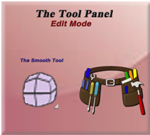
Even though Blender offers this Smooth tool in its Edit mode tool box, it is probably not the best way of going about this smoothing process. As Blender offers more efficient ways of smoothing, through both its Object’s mode right click menu, and through modifiers such as the Subdivision Surface modifier and the Laplacian Smooth modifier. But that being said, since this is a topic in this Blender series on the Edit mode’s tools panel, and this tool is offered here, it doesn’t mean I will not be talking about it. So, in this tutorial I will be presenting the Smooth tool, and its techniques for using it.
The Default Cube
Go into Edit Mode with the default cube. Now if you attempt to use this Smooth tool on it, you will quickly notice that it really doesn’t work so well. Especially if you select the entire box, as this will only make the cube larger or smaller. And grabbing just a vertex won’t really do too much either.
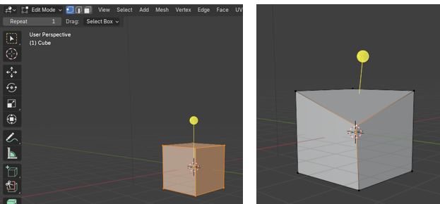
This is because of the vertex count, right now on the cube; in order to smooth, we really need to subdivide this cube, and make the mesh more malleable.
We can do this by selecting the cube, and right clicking to bring up this menu.
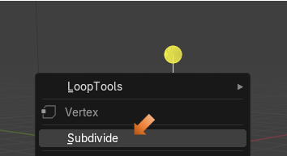
I upped the Number of Cuts to 10, so we really have something to work with. Take note that there is also an option for Smoothness from this dialog box too.
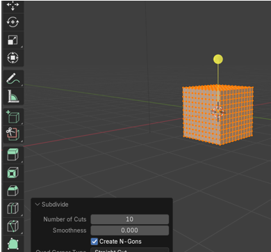
This is what Smoothness would look like if we by passed the Smooth tool, and upped the smoothness in the last Operation Subdivide box.
Move the Smoothness level to 1 from this dialog box, and we get a perfect ball.
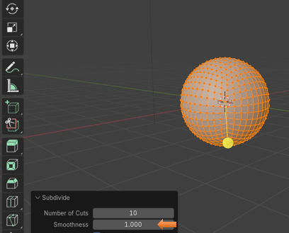
Using the Smoothness Tool from the Tool Box
Now Ctrl-Z to undo that and try the Smoothness tool from the Tool box instead. You will find that if we use the Tool, and set the smoothness to 1, we get this.
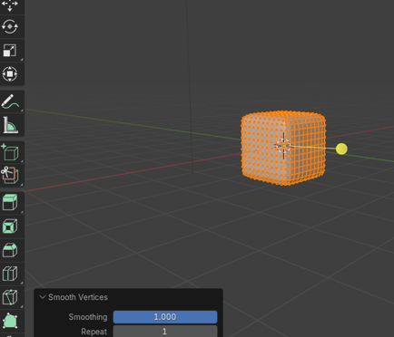
Now if we try to up the Smoothness level, we actually get a mess with parts of the mesh sticking through other sections of the mesh.
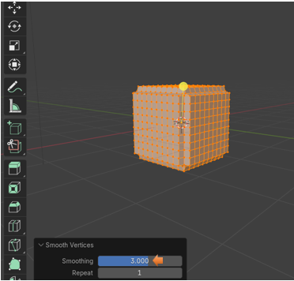
If we up the Repeat to something like 10, we find that the cube will actually shrink to try and get somewhere.
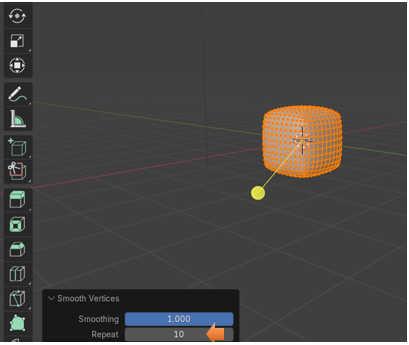
Here we up the Repeat to 50. Still not quite a round ball. But if all you want is to round the corners on this cube, it works fairly well.
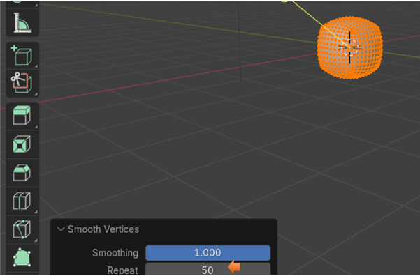
Smoothing Specific Axis
You can also decide to just smooth certain axis on your object, by checking and unchecking the Axis boxes at the bottom of the Smooth Vertices dialog box. Here I turned off the X axis, and so it did not smooth on that axis.
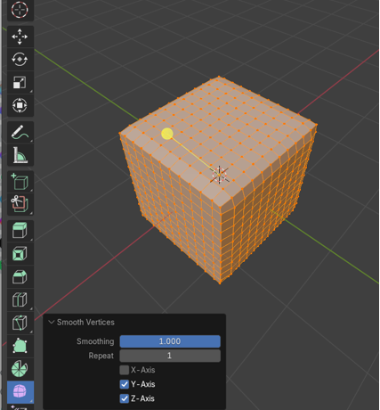
The Randomize Tool
You will find the Randomize Tool tucked up away underneath the Smooth tool. You can get to it just by hitting the tools little arrow in the bottom right-hand corner.
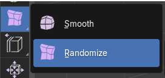
The randomize tool is another tool which allows you to move vertices around on the mesh. It does this along the normal. Remember in Blender that the normal refers to the direction of a face or vertex on the 3D object, and pretty much distinguishes between the outside an inside of the mesh. Therefore, if it is moving around the vertices along the normals it would be creating the effect from either one side of the mesh or the other.
This tool is pretty much the smooth tool, but will change the movement of the vertices along the mesh in a randomized fashion. So, this may or may not be what you want, but it is there for you to play with all the same.
How to use the Randomize Tool
Here I took the cube, brought it into edit mode and subdivided to a level of 10.
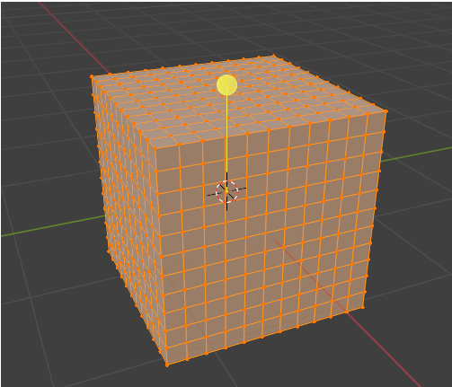
Pull out your tool and just start tugging on that yellow icon.
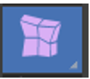
You can see the box start to break apart
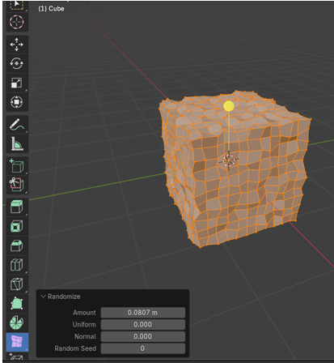
The more you tug, the more your cube falls into disarray.
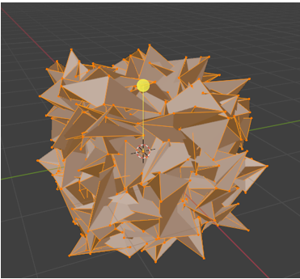Options in the Randomized Dialog Box
You have a few options in which you can change in the Randomize dialog box at the bottom. The Amount setting is going to do the exact same thing that we just did by pulling on that yellow stick, and change the rate of dishevelment you wish you cube to fall into.
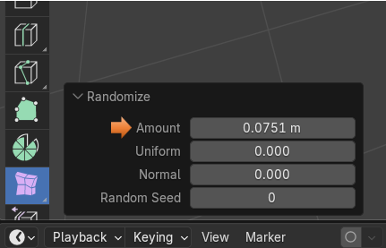
Uniform goes from 0 to 1, and just determines (by a slight amount) how much randomness you want the tool to display.
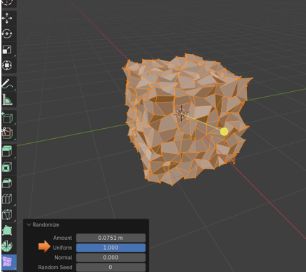
Setting the Normal setting to 1 will just flip the side of the cube in which the effect will come from. Either it will be working from the outside of the box, or the inside of the box.
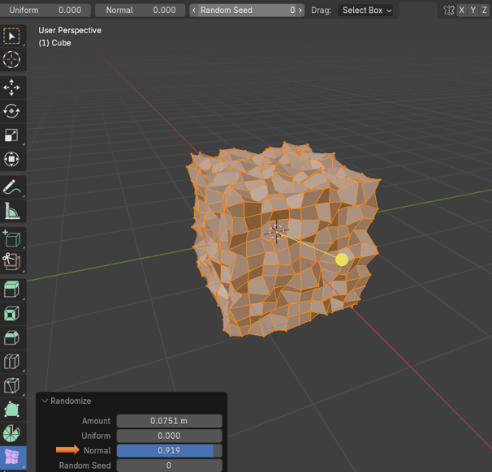
And then you can also send a Random Seed to set specifically when you want this randomness to occur.
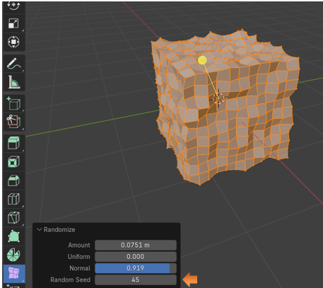
Well, there you have all of the different things that you can do. A little bit of smoothness, and a little bit of chaos, all from one tool.